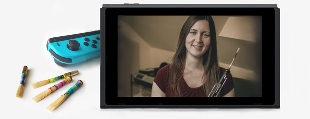

Orlando-based oboist Kristin Naigus is an active freelance orchestral musician. She performs regularly in over half a dozen professional symphonies and countless other ensembles throughout the state of Florida, including the Ocala Symphony, Brevard Symphony, Orlando Philharmonic, Gainesville Orchestra, and Space Coast Symphony. She has shared the stage with names such as Idina Menzel, Johnny Mathis, and Kansas on their Florida tours, as well as video game symphony productions such as "Distant Worlds: Music from Final Fantasy", "Videogames Live" and "Pokemon: Symphonic Evolutions". Not only a section player, Kristin has participated in solo and chamber concerts in North America, South America, Europe, and Asia. She gave the southeast US premiere of Aaron J. Kernis' "Colored Field" concerto for English horn in 2014, and of Kevin Puts' Concerto for Oboe and Strings in 2015. She holds degrees in oboe performance from the University of Michigan and the University of Florida.

Alongside live performances, Kristin is a session musician for video games, tv, and other media. In addition to oboe and English horn, she studies and records dozens of woodwind instruments from around the globe. While she mostly works from her remote home setup, projects have found her in prestigious studios such as Abbey Road in London and Oceanway in Nashville.
As an arranger, she has contributed to several video game remix projects and is a co-producer of the Billboard-charting Project Destati, paying tribute to Disney & Square-Enix's "Kingdom Hearts" series. Her albums, as well as her personal Youtube channel, are enjoyed by a wide audience of gaming and music enthusiasts alike.
Kristin is available both as a live concert performer and recording artist for your project. Send an inquiry!